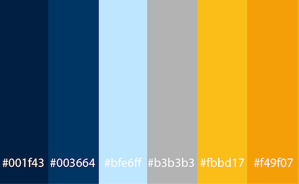

Color Scheme
I chose the following color palette for the website:

These colors work well together and compliment each other. They also remind me of fall colors, crisp air, and blue skies.
Color References
- Header, footer: cyan-blue, #003664, rgb (0,54,100)
- Main body text background, heading 2: white, #ffffff
- Navigation: medium-grey, #b3b3b3, rgb (179,179,179)
- Navigation wayfinder, main title, and smaller accents: light-blue, #bfe6ff, rgb (191,230,255)
- Accent text background: navy-blue, #001f43, rgb (0,31,67)
- Main articles' headings: #f49f07, rgb (244,159,7)
- Logo and headers for text on navy-blue background: #fbbd17, rgb (251,189,23)